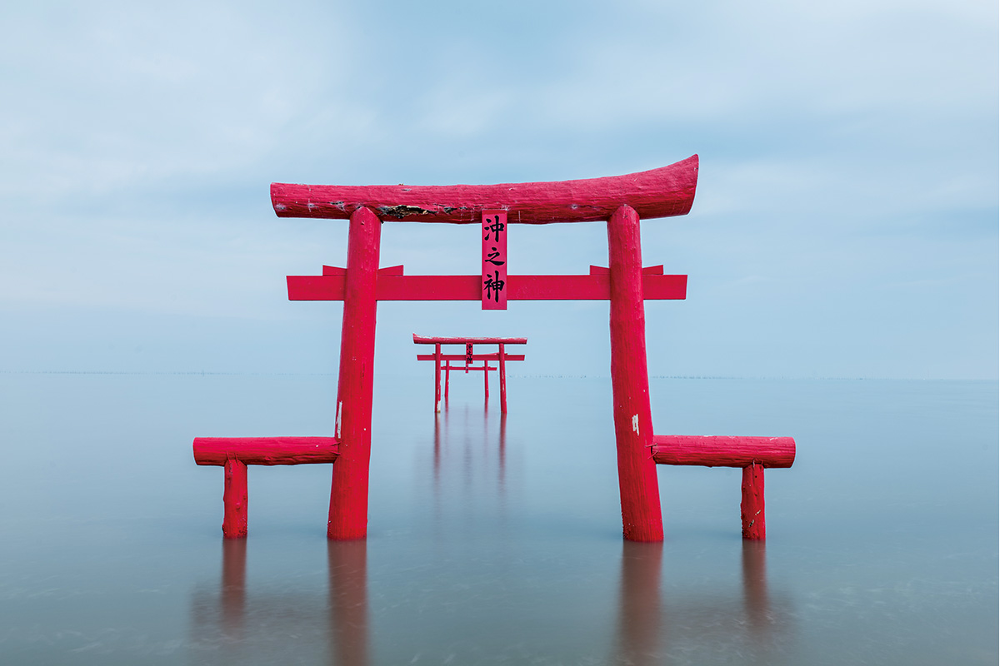
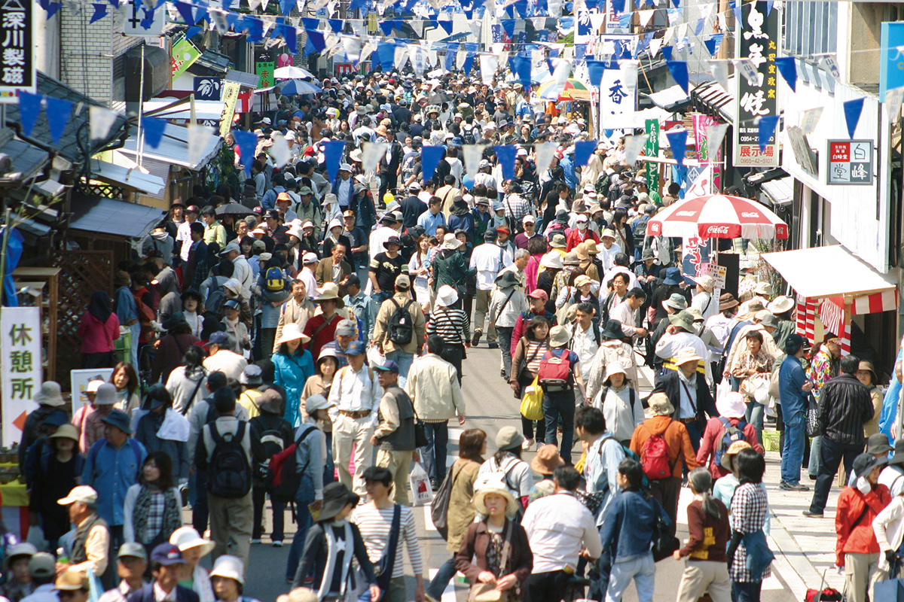
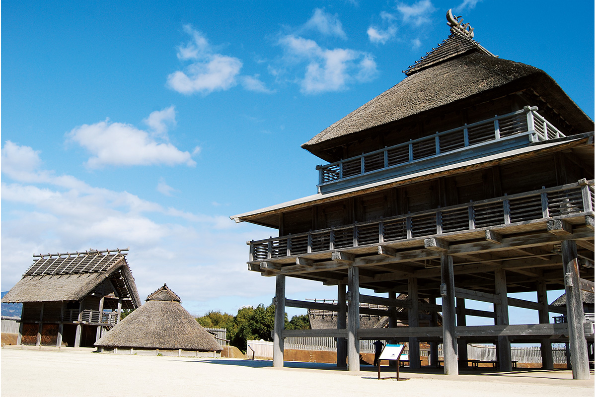
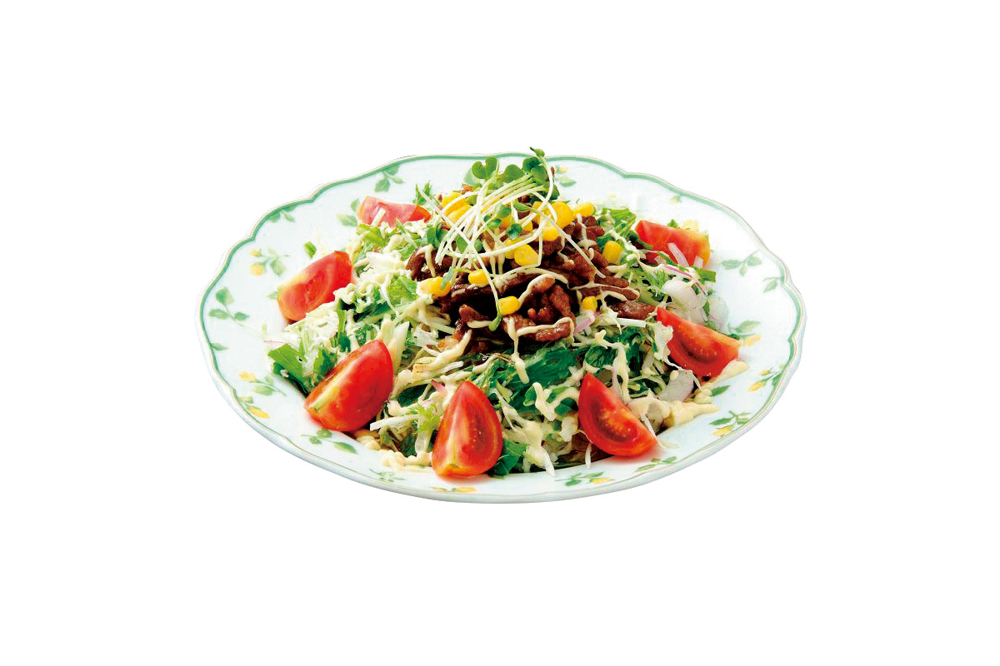
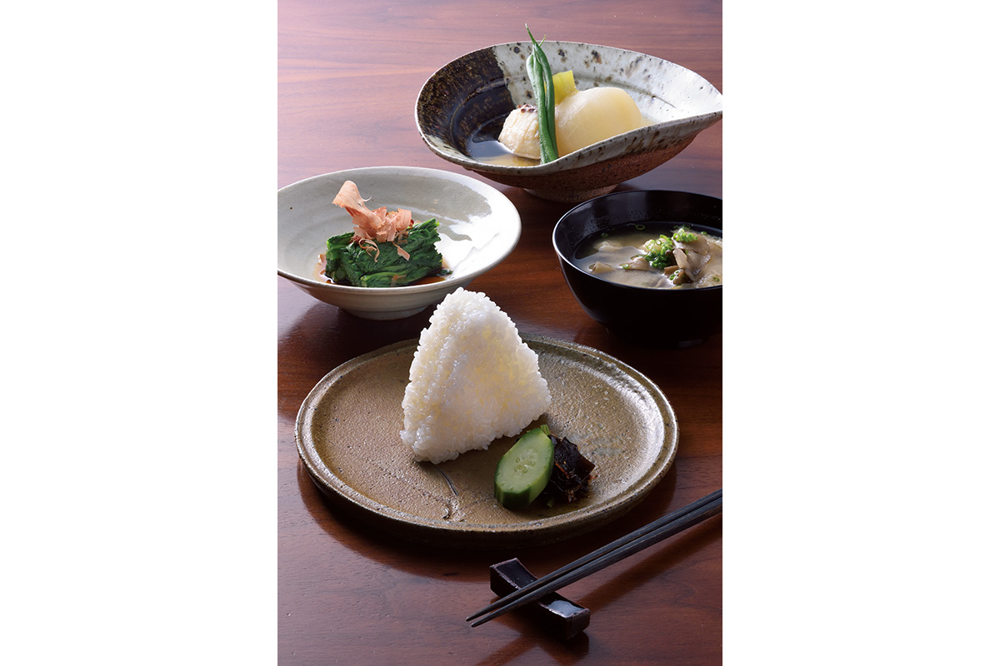
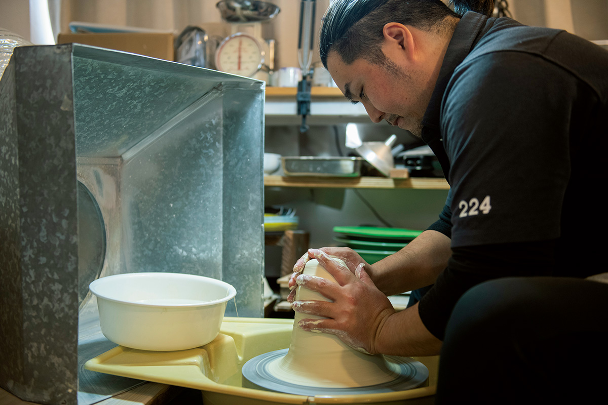
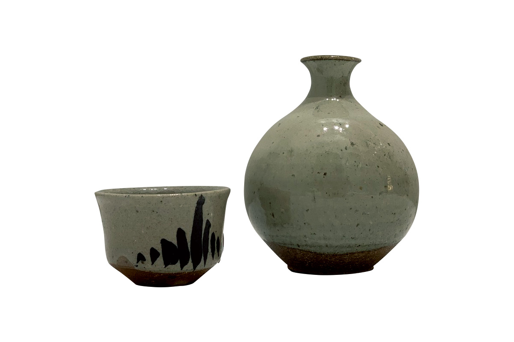
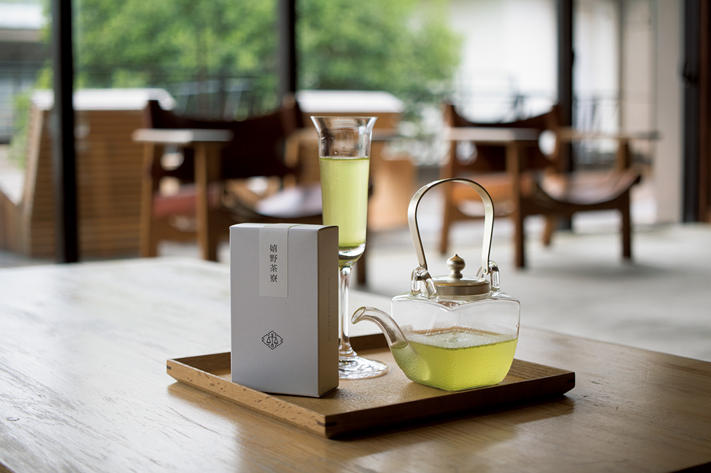
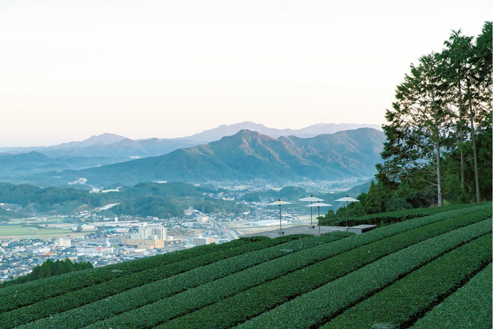

Префектура Сага
Сага: ворота в море, фарфор с четырёхсотлетней историей и рис с майонезом

Три красных тории стоят в воде залива, вокруг мелкая рябь на отливе.
Отсюда в Японию пришёл фарфор, а до него через эти берега шла связь с материком. Разбираем, за чем ехать в Сагу: от торий, стоящих прямо в воде залива, до ярмарки посуды, куда съезжается миллион человек.
О префектуре
Место, где вошли в Японию континентальные вещи
Сага лежит на северо-западе Кюсю: на севере к ней подступает изрезанное побережье и песчаные пляжи моря Гэнкай, на юге лежат отмели и осушенные земли залива Ариакэ. До Осаки отсюда около пятисот километров, а до Корейского полуострова всего около двухсот, потому эти места всегда были входом для континентальной культуры.
Здесь осталось поселение с рвом эпохи Яёй в Ёсиногари, а главные местные ремёсла это керамика Карацу, Имари и Арита, в которых сильнее всего видно материковое влияние.
Название области объясняют по-разному. В «Фудоки провинции Хидзэн» сказано, что Ямато Такэру, придя сюда и увидев густые камфорные деревья, предложил назвать место «страной процветания», и так появилось сначала «уезд славы», а потом «уезд Сака».
Эмблема префектуры изображает богатую землю и море Саги, а ещё общение жителей префектуры с людьми Японии и мира и растущее развитие.
Что посмотреть
Тории, которые уходят под воду
Тории святилища Оуо в море
Около трёхсот лет назад чиновник, оставшийся на островке, который скрывается в прилив, был спасён большой рыбой, и в благодарность здесь поставили святилище и тории в воде. В отлив под ними можно пройти пешком.
- Адрес
- 1874-9 Tara, Tara, Fujitsu, Saga
- Справки
- ассоциация туризма посёлка Тара
- Телефон
- +81 954-67-0065
Что ещё посмотреть
- Руины замка Карацу, стены и башня над морем
- Сад Мифунэяма ракуэн, скалы и пруд у подножия горы
- Гончарный квартал Окути, печи в горном ущелье
Праздники
Миллион гостей на четырёх километрах
Ярмарка керамики Арита
Вокруг станции Арита на четыре километра выстраиваются лавки с керамикой: от недорогой утвари до работ известных мастерских. Число точек превышает четыреста пятьдесят, и каждый год сюда приезжает около миллиона человек.

- Период
- ежегодно с 29 апреля по 5 мая
- Место
- район вокруг станции Арита, около четырёх километров
Другие праздники
- Праздник Карацу кунти, шествие с фигурами на тележках
- Праздник Имари тонтэнтон, барабанный бой на воде
- Тур по сакеварням Касимы, дегустация в старых складах
Музеи и архитектура
Девяносто восемь построек эпохи Яёй
Исторический парк Ёсиногари
В парке восстановили девяносто восемь построек эпохи Яёй, включая дома на сваях и склады, и там же открыт доступ к находкам и к опыту быта того времени. Четыре зоны парка дают почувствовать воздух той эпохи.

- Адрес
- 1843 Tate, Yoshinogari, Kanzaki, Saga
- Телефон
- +81 952-55-9333
- Сайт
- yoshinogari.jp
Что ещё посмотреть
- Префектурный музей керамики Кюсю, собрание фарфора региона
- Старая вилла Такатори, дом с садом и чайным павильоном
- Ворота источника Такэо, красные ворота с историей
Местная кухня
Рис под мясом и овощами
Сисириан-райс
Базовая форма проста: на тёплый рис кладут обжаренное мясо и свежие овощи и поливают майонезом. Блюдо появилось около 1975 года в одной кофейне города Сага и с тех пор стало местным.

Что ещё попробовать
- Кухня залива Ариакэ, моллюски и водоросли с отмелей
- Суп даго-дзиру, густой суп с клёцками
- Суши Суко, прессованное суши с большим куском рыбы
Где поесть
Японская кухня у подножия горы
Ресторан Арутокоро
Ресторан стоит у подножия горы Кагами в Карацу и готовит просто, но точно, на местных продуктах. Подают в посуде мастеров Карацу, потому ужин здесь идёт вместе с осмотром керамики.

- Адрес
- 732 Kagami, Karatsu, Saga
- Телефон
- +81 955-58-8898
- Часы
- 11:00-15:00, 17:00-22:00
- Выходные
- по обстоятельствам
- Сайт
- arutokoro.com
Ремёсла
Гончарный круг и четыре века глины
Фарфор Хидзэн-Ёсида
Ремеслу Хидзэн-Ёсида больше четырёхсот лет. Особенно интересна мастерская, которая ведёт традицию вперёд, соединяя свободные идеи с гибким подходом к форме.

- Справки
- мастерские фарфора Хидзэн-Ёсида
Посуда мастерской Рюта
В этой мастерской работают три поколения одной семьи, Накадзато Такаси, Такамэ и Кэнта, и каждый делает свою посуду. Их сосуды делают еду на столе более выразительной.

- Телефон
- +81 955-74-3503
- Сайт
- ryutagama.com
Что привезти
Чай с высоких террас
Сэнтя от чайного салона Урэсино
Семь молодых чаеводов из Урэсино принесли каждый свой лучший молодой чай этого сбора и смешали их в один напиток. У чая получается заметная сладость. Пакет пятьдесят граммов стоит 1080 иен.

Чайные террасы на склонах
Сам чайный район Урэсино известен мягкой водой и потому здесь издавна делают чай с бархатным вкусом. Склоны заняты рядами кустов, и с дороги открывается вид на долины и горы до самого горизонта.

- Справки
- ассоциация туризма Урэсино
Где остановиться
Две гостиницы с историей
Гостиница Ёёкаку
Рёкан хранит черты эпох Мэйдзи и Тайсё и держит чисто японский стиль. Готовят на свежей рыбе моря Гэнкай, и у кухни много постоянных поклонников, а из комнат открывается вид на прогулочный сад.
- Справки
- рёкан Ёёкаку, город Карацу
Вилла Ватая
Гостиница при источнике ведёт работу с длительным отдыхом и приёмом компаний и считается одной из самых заметных площадок такого формата в стране.
- Справки
- вилла Ватая, город Урэсино
Местный диалект
Как здесь говорят «очень вкусно»
- габай умака дэс нэочень вкусно
- ё: ките кунеаттадобро пожаловать
- андзя монстарший брат
- у: сикацугрубоватый, небрежный
Рекорды
В чём Сага первая
- №1 производство мандаринов из теплиц
- №1 выращивание нори
- №1 доля заасфальтированных дорог
Вопросы и ответы
Что ещё спрашивают о Саге
Какой город был станцией на дороге Нагасаки в эпоху Эдо?
Источник Такэо. Дорога Нагасаки связывала Кокуру и Нагасаки через двадцать пять станций, и в Такэо купались даже Зибольд и Ёсида Сёин. Гостей встречают красные ворота источника.
Какие соревнования проводят прямо на отмелях?
Гаталинпик в Касиме. На илистой отмели залива Ариакэ, где перепад уровня воды самый большой в стране, устраивают гонки на приспособлении вроде лыж и велосипедные заезды по грязи, и состязания получаются необычными.
Справочник
Сага в цифрах
Общие сведения
| Административный центр | Сага |
| Муниципалитеты | 10 городов, 10 посёлков |
| Площадь | 2441 кв. км |
| Население | 820 тысяч человек |
| Плотность населения | 335,6 человека на кв. км |
| Туристов в год | 13,99 млн |
| Дерево префектуры | камфорное дерево |
| Цветок префектуры | камфорное дерево |
| Птица префектуры | сорока |
Климат
| Средняя температура | +17,4 |
| Максимум | +35,3 |
| Минимум | +1,0 |
| Осадки | 1877 мм |
| Ясных дней | 41 |
| Дождливых дней | 105 |
| Снежных дней | 20 |
Для путешественника
| Онсэнов | 22 |
| Гостиниц и рёканов | 377 |
| Музеев искусств | 8 |
| Музеев | 35 |
| Митиноэки, придорожных станций | 9 |
| Национальное сокровище | свиток «Сайбараку-фу» |
| Важных культурных ценностей | 67, из них 1 национальное сокровище |
| Исторических мест | 25 |
| Живописных мест | 2 |
| Природных памятников | 15 |
| Всемирное наследие | объекты промышленной революции Мэйдзи |
| Национальные парки | Гэнкай, всего один |
Природные памятники
- Сорока, птица, давшая имя префектуре
- Большая катальпа в Симогасэ, старое дерево у дороги
- Большое камфорное дерево в Кавако, долгоживущее дерево
- Гинкго в Арите, осеннее дерево у храма
- Семь котлов у скал Якатаиси, скалы, размытые морем